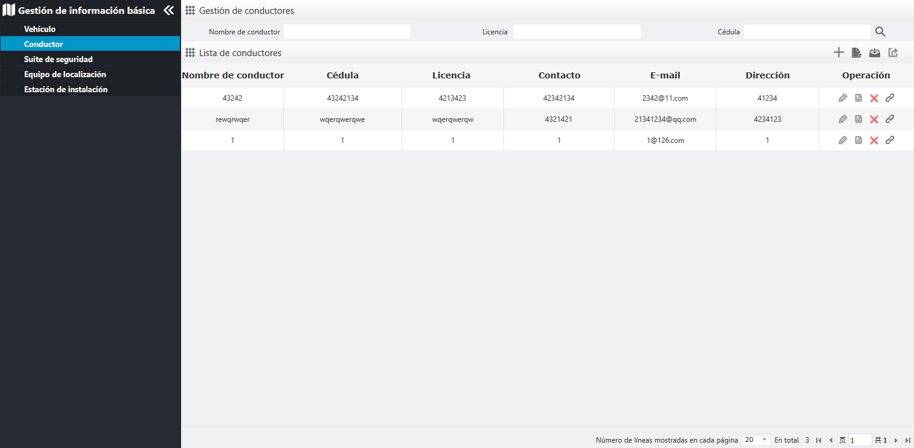

Conductor
Mantenga la información del conductor, agregue, modifique, elimine, vea la información del conductor y vincule los vehículos
a los conductores, importe la importación del lote y exporte la información del conductor.
Haga clic en en la barra del menú de navegación a la izquierda para entrar a la página “Gestión de conductores”, como se muestra en la siguiente figura.

Fig 69 Gestión de conductores
| • | Consultar conductores Para las operaciones detalladas, véase Consultar vehículos.
|
| • | Agregar conductor Para las operaciones detalladas, véase Consultar vehículos.
|
| • | Descargar la plantilla Para las operaciones detalladas, véase Consultar vehículos.
|
| • | Importar por lotes Para las operaciones detalladas, véase Importar por lotes.
|
| • | Exportar información del vehículo Para las operaciones detalladas, véase Importar por lotes.
|
| • | Modificar información del conductor Para las operaciones detalladas, véase Modificar información del vehículo.
|
| • | Eliminar conductor Para las operaciones detalladas, véase Eliminar tipo de vehículo.
El conductor del vehículo vinculado no puede eliminarse, y se necesita librar la asociación entre el vehículo y el conductor
primero.
|
| • | Ver información del conductor Para las operaciones detalladas, véase Ver la información del vehículo.
|
| • | Vínculo con el vehículo En la gestión de las relaciones entre el conductor y el vehículo, uno o más vehículos pueden vincular con el conductor
|